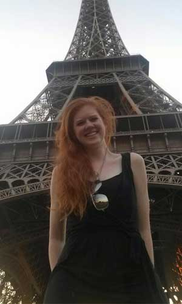

Manhattan College Performing Arts!
|
Manhattan College Singers President: Katelyn Connor  |
The Manhattan College Singers is a fifty person vocal ensemble at Manhattan College The group is not only made up of undergraduate and graduate students, but these students are joined by members of the community as well as some alumni! The group meets Wednesdays from 7-8:30 PM, so if you are free and love to sing, come join us. The group has two big performances, one each semester, as well as some smaller performances including the Fall Honors Convocation and Alumni Weekend.
Every winter the group, along with the Manhattan College Orchestra, performs in Lessons and Carols, which is a 2-hour Christmas Performance including reading by Campus Ministers and a tree lighting ceremony at the end. In the spring, the group performes in a Spring Concert with some of the other ensembles on campus. This performance has a program which is selected by the students. It is fun and upbeat so come listen!
This past fall, members of the Manhattan College singers went on to create and A Capella group, known as the ManhatTONES! |
|---|